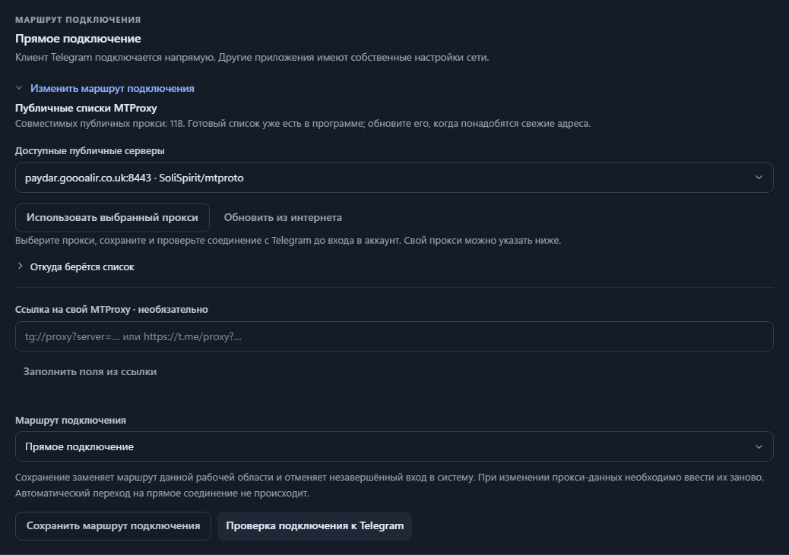

Documentação / 03
Escolha um proxy
Escolha uma rota, salve-a e teste a conexão com o Telegram.
Três conexões, configurações separadas
Conta → rota selecionada: direta / SOCKS5 / HTTP / MTProxy → Telegram
Downloader de listas → HTTPS direto ou proxy de feed configurado → feeds públicos
Witness → suas próprias configurações de HTTP/SOCKS5 → API do Telegram Bot
Escolha a partir de uma lista pública
- Abra as configurações de conexão da conta e selecione “Alterar rota de conexão”.
- Selecione um MTProxy público e salve a rota.
- Execute a verificação de conexão do Telegram. Você pode fazer isso antes de fazer login.
A instalação inclui um instantâneo da lista pública. A atualização pela internet busca os feeds públicos configurados. A atualização da lista mantém inalterada a rota da conta selecionada. Caso uma fonte falhe, sua última lista utilizável é mantida.

Utilize seu próprio proxy
Cole um link tg://proxy?… ou https://t.me/proxy?…, ou insira manualmente os detalhes de SOCKS5, HTTP CONNECT ou MTProxy. Interrompa a observação antes de alterar a rota de uma conta ativa.
As entradas públicas são sugestões, não serviços verificados. Caso uma falhe, escolha outra e teste novamente. A rotação automática de servidores não está implementada.
Segredos suportados e privacidade do feed
O MTProxy suporta 32 caracteres hexadecimais e “dd” mais 32 caracteres hexadecimais. Segredos TLS falsos que começam com “ee” são excluídos. Feeds públicos não podem selecionar endereços IP locais ou reservados.
Os feeds são baixados por meio de uma conexão HTTPS separada, direta por padrão. Defina TGWITNESS_PROXY_FEED_PROXY para uma rota de download via HTTP/SOCKS5. As credenciais de sessão e os tokens do painel ou do bot não são enviados aos provedores de listas. TGWITNESS_PROXY_CATALOG substitui as assinaturas públicas por um catálogo local gerenciado pelo operador.
O TgWitness possui suas próprias configurações de rede
O MTProxy se aplica à conta do Telegram responsável pela coleta. O bot de testemunho utiliza configurações HTTP/SOCKS5 e, opcionalmente, seu próprio endpoint da API do bot.